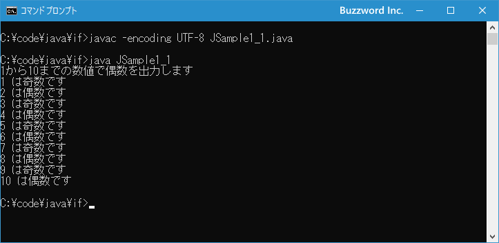
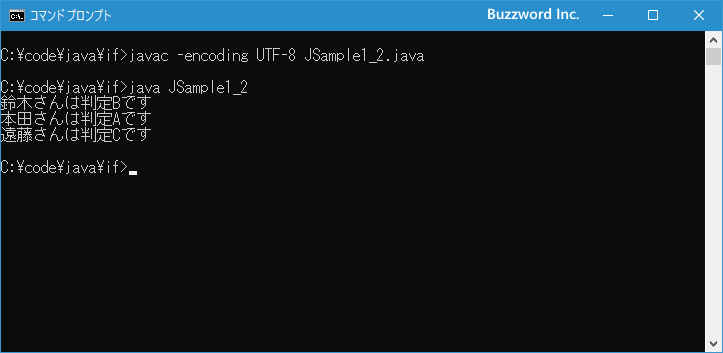

if文を使った条件分岐
Java で条件分岐を行う時に利用できる if 文の使い方について解説します。 if 文は条件式を評価して true のときと false のときで別々の処理を行いたい場合に使用します。また複数の条件式を記述してより複雑な条件分岐を行うこともできます。
if文の使い方
if 文は条件式を評価して結果に応じて異なる処理を行う場合に使われます。書式は次のとおりです。
if (条件式){
// 条件式が true のときに実行される処理
...
}
if 文では条件式を評価して true だった場合は { から } のブロック内に記述された処理を上から順番に実行します。条件式が false の場合はブロック内の処理は何も行わずに if 文の次の処理へ進みます。
※ 条件式は結果として boolean 型の値を返す式であればどのように記述してもいいのですが、関係演算子や論理演算子を組み合わせて指定する場合が多いです。詳しくは「関係演算子と等価演算子」および「論理演算子」を参照して下さい。
次のサンプルをみてください。
int num = 4;
if (num % 2 == 0){
System.out.println("偶数です");
}
if 文で変数 num の値が 2 の倍数かどうかを評価します。 true の場合であれば「偶数です」と画面に表示します。 false の場合であれば何もしません。
なお if 文で実行する処理が 1 つだけの場合は { と } を省略して次のように記述することもできます。
if (条件式) // 条件式が true のときに実行される処理
この場合は if 文の条件式を評価して true だった場合に、 if文の次の 1 行だけを実行します。
if..else文
条件式が true の場合と false の場合にそれぞれ異なる処理を行いたい場合は次の書式を使用します。
if (条件式){
// 条件式が true のときに実行される処理
...
}else{
// 条件式が false のときに実行される処理
...
}
if..else 文では条件式を評価して true だった場合には if のあとの { から } のブロック内に記述された処理を上から順番に実行します。条件式が false の場合は else のあとの { から } のブロック内に記述された処理を上から順番に実行します。
次のサンプルをみてください。
int num = 5;
if (num % 2 == 0){
System.out.println("偶数です");
}else{
System.out.println("奇数です");
}
if 文で変数 num の値が 2 の倍数かどうかを評価します。 true の場合であれば「偶数です」と画面に表示します。 false の場合であれば「奇数です」と画面に表示します。
それでは簡単なサンプルプログラムを作って試してみます。テキストエディタで次のように記述したあと、 JSample1-1.java という名前で保存します。
class JSample1_1{
public static void main(String[] args){
System.out.println("1から10までの数値で偶数を出力します");
for (int i = 1 ; i <= 10 ; i++){
System.out.print(i + " は");
if (i % 2 == 0){
System.out.println("偶数です");
}else{
System.out.println("奇数です");
}
}
}
}
コンパイルを行います。
javac -encoding UTF-8 JSample1_1.java
その後で、次のように実行してください。
java JSample1_1

for 文の中で 1 から 10 までの数値を順番に取得し、 if 文を使って数値が 2 の倍数なら偶数と画面に表示し、そうでないなら奇数と画面に表示します。
複数の条件式を組み合わせる
if 文では条件式の true または false で処理を分けるだけでなく、複数の条件式を使ってより細かい分岐を行うことができます。書式は次のとおりです。
if (条件式1){
// 条件式1が true のときに実行される処理
...
}else if (条件式2){
// 条件式2が true のときに実行される処理
...
}else if (条件式3){
// 条件式3が true のときに実行される処理
...
}else{
// すべての条件式が false のときに実行される処理
...
}
最初に条件式1を評価し、 true であれば直後のブロック内の処理を実行し if 文を終了します。条件式1が false だった場合に条件式2が true だった場合は直後のブロック内の処理を実行し if 文を終了します。同じように必要なだけ条件式を記述して true だった場合のブロックを記述できます。最後にすべての条件式が false だった場合に else のあとのブロック内の処理を実行します。
注意点として条件式2が評価されるのは条件式1が false だった場合だけです。条件式1が true だった場合はそれ以降の条件式は評価されません。同じように条件式3が評価されるのは条件式1と条件式2が共に false だった場合だけです。
次のサンプルをみてください。
int point = 74;
if (point > 90){
System.out.println("判定Aです");
}else if (point > 70){
System.out.println("判定Bです");
}else{
System.out.println("判定Cです");
}
変数 num に格納されている値を対象として 90 より大きい場合は「判定A」、 70 より大きい場合は「判定B」、 70以下の場合は「判定C」とそれぞれ画面に表示します。
それでは簡単なサンプルプログラムを作って試してみます。テキストエディタで次のように記述したあと、 JSample1-2.java という名前で保存します。
class JSample1_2{
public static void main(String[] args){
int[] point = {75,94,68};
String[] name = {"鈴木","本田","遠藤"};
for (int i = 0; i < 3; i++){
System.out.print(name[i] + "さんは");
if (point[i] > 90){
System.out.println("判定Aです");
}else if (point[i] > 70){
System.out.println("判定Bです");
}else{
System.out.println("判定Cです");
}
}
}
}
コンパイルを行います。
javac -encoding UTF-8 JSample1_2.java
その後で、次のように実行してください。
java JSample1_2

配列に格納された 3 つの数値を for 文を使って順に取り出します。取り出した値を if 文を使って条件分岐し、 90 より大きい場合は「判定A」、 70 より大きい場合は「判定B」、 70以下の場合は「判定C」とそれぞれ画面に表示しています。
-- --
Java で条件分岐を行う時に利用できる if 文の使い方について解説しました。
( Written by Tatsuo Ikura )

著者 / TATSUO IKURA
初心者～中級者の方を対象としたプログラミング方法や開発環境の構築の解説を行うサイトの運営を行っています。